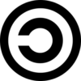
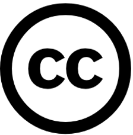

¿Cómo debo usar los Recursos Educativos Abiertos (REA)?
Los Recursos Educativos Abiertos (REA) son un producto del Movimiento de Cultura Libre y pueden estar publicados bajo dos tipos de licencia con distintos niveles de libertad:
|  | Copyleft (Dominio Público) Se trata de obras de dominio público con libertad de distribución y uso ilimitados. Bajo la licencia Copyleft cualquier contenido puede ser distribuido, modificado, copiado o incluso hacerse un uso comercial (si el autor/a lo autoriza). Su filosofía es inversa a la del tradicional Copyright (derecho de autor) |
|  | Creative Commons (CC) Creative Commons es una organización sin ánimo de lucro que promueve el acceso y el intercambio de obras de dominio público en las que el autor establece algunas limitaciones. |
El uso de los REA publicados bajo la licencia Creative Commons está regulado en base a 4 condiciones que permiten al docente o estudiante:
· Revisar para adaptar, mejorar o actualizar el recurso educativo.
· Combinar con otro recurso para producir nuevos recursos.
· Reutilizar el recurso original o el reeditado en otros contextos.
· Redistribuir hacer las copias que necesitemos para compartir.
El lema de Creative Commons: «Cuando compartimos, todos ganamos»
El autor de un REA puede reservarse algunas atribuciones. Esto significa que aunque no tengas que pagar por el contenido, solo podrás utilizarlo si cumples con las limitaciones establecidas por el autor. Estas limitaciones están sujetas a 6 tipos de licencia indicadas en las obras distribuidas con los siguientes ideogramas: